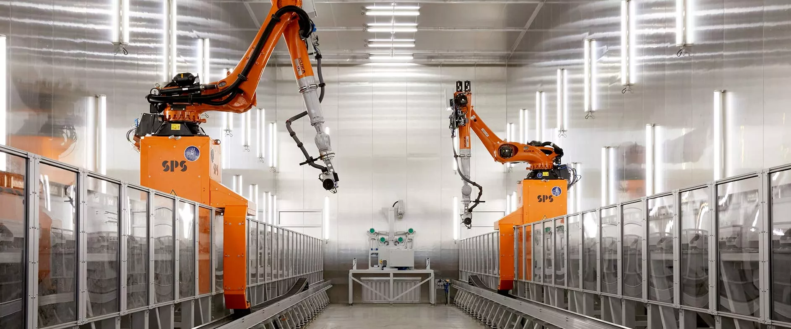

LES TECHNOLOGIES ÉMERGENTES AU SERVICE DU FERROVIAIRE
Publié le 19/02/2024 — Mis à jour le 20/03/2025 — Source : Groupe SNCF

De l'intelligence artificielle à la cybersécurité, en passant par la robotique ou les nouveaux matériaux, la SNCF mise sur les technologies émergentes pour transformer le ferroviaire. Le programme Research4Future porte cette ambition, soutenu par plus de 500 experts du réseau interne Synapses.
L'Intelligence Artificielle
Les algorithmes d'IA de la SNCF facilitent les métiers des collaborateurs, la maintenance des matériels roulants et les voyages des clients. La SNCF déploie des outils « maison » d'IA générative de manière éthique, en veillant à la souveraineté des données et en limitant les émissions de CO₂. La recherche en cybersécurité et en sciences de la décision s'appuie également sur les avancées de l'IA.
Tous les sujets de recherche

Les Sciences Cognitives
Psychologie cognitive, sociologie et anthropologie pour analyser la perception des clients et adapter l'offre : information voyageur, gestion des flux, confort à bord.
La Cybersécurité
L'IA est utilisée pour détecter les attaques informatiques. L'objectif : créer un système résilient capable de détecter et neutraliser automatiquement les menaces sur le train connecté du futur.
La Fabrication Additive (Impression 3D)
L'impression 3D industrielle réduit les délais de livraison des pièces de rechange, lutte contre l'obsolescence et permet de réparer rapidement des composants mécaniques.